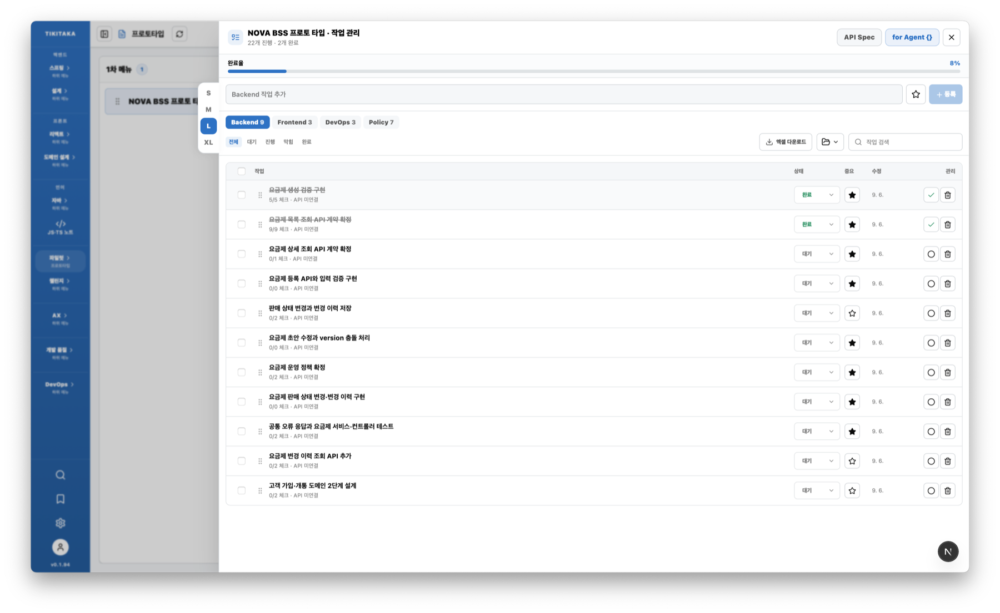
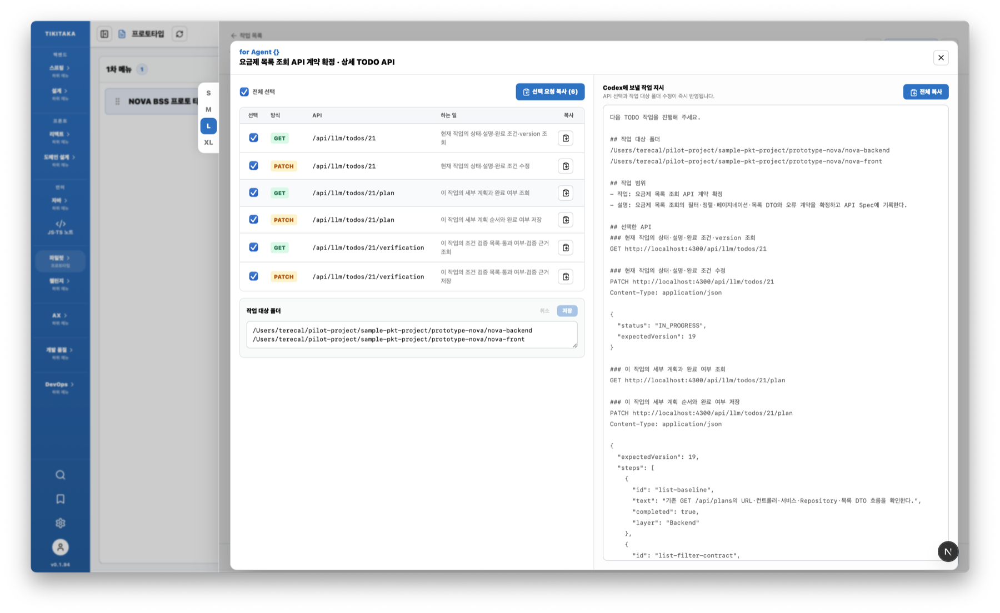
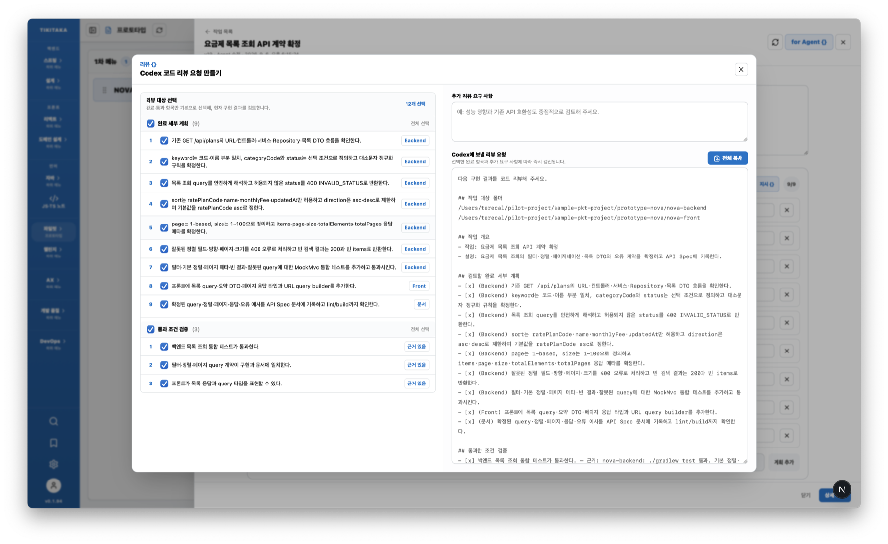
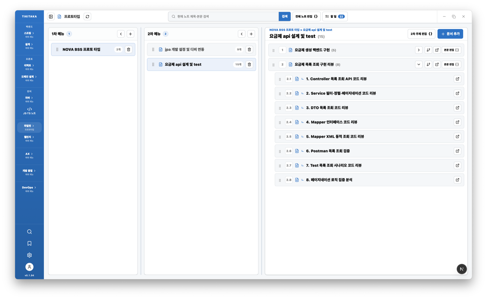

TIKITAKA DEVELOPMENT NOTE
학습과 개발의 티키타카를
지속 가능한 팀의 역량으로 연결합니다.
티키타카 개발 노트는 사람과 Agent가 함께 배우고, 만들고, 되돌아보는 바이브 코딩 기반의 학습 노트 앱입니다. 코드를 빠르게 만드는 데서 멈추지 않고, 학습과 개발을 5:5 피프티 피프티로 동등하게 가져가며 경험을 다음 작업의 지식으로 축적합니다.
할 일 → 구현 → 리뷰 → 노트 정리
업데이트된 할 일 관리를 시작점으로 목표·범위·완료 기준을 정하고, Agent에게 구체적인 구현 지시를 전달해 개발과 검증을 진행합니다. 이어서 완료 계획과 통과 조건을 바탕으로 코드를 리뷰하고, 확인한 개선점과 새로 배운 내용을 다시 노트로 정리해 다음 학습과 개발의 출발점으로 만듭니다.
기록을 실제 개발에 다시 쓰는 앱입니다
이 프로젝트의 가치는 노트를 보관하는 데 있지 않습니다. 문제와 데이터 흐름을 정리해 도메인을 설계하고, 화면과 기능을 프로토타입으로 확인하며, 그 과정에서 만든 지식을 다음 개발에 다시 사용하는 데 있습니다.
기본기부터 기술 부채 해결까지
기본기 강화, 언어와 프레임워크 학습, 메이저 스펙의 이해와 적용, 기술 부채 해결을 하나의 성장 범위로 다룹니다. 새 기능을 만드는 속도와 기반을 탄탄히 다지는 시간을 함께 쌓아, 오래 유지할 수 있는 개발 역량을 만듭니다.
할 일·구현·리뷰·노트가 한 흐름으로 이어집니다
아래는 실제 티키타카 개발 노트에서 SKT Nova 프로토타입을 실행하고 지식으로 남기는 순서입니다. 이미지를 선택하면 원본 크기로 자세히 확인할 수 있습니다.




가볍게 배포하고, 쉽게 공유합니다
티키타카 개발 노트는 Tauri 기반 데스크톱 앱으로, Next.js 풀스택과 SQLite를 함께 사용합니다. 별도의 복잡한 서버 환경 없이도 필요한 기능과 학습 데이터를 하나의 앱으로 배포하고 공유하기 쉬워, 개인 학습부터 팀의 프로토타입까지 빠르게 시작할 수 있습니다.
작은 실행을 팀의 살아있는 기술 베이스로
작업을 작게 나누고 빠르게 검증하며, 코드·컨벤션·API 규칙·컴포넌트 사용법·디버깅 경험을 노트로 남깁니다. 축적된 문서는 Agent도 반복해서 참조하는 살아있는 기술 베이스가 되어, 복잡한 구현과 리팩터링, 문서화, 테스트를 더 자신 있게 진행하게 합니다.
개발 지식 정보 시스템으로 확장합니다
앞으로는 MCP와 RAG를 연결해 작업과 관련된 노트를 자동으로 찾고, 팀에서 검증한 규칙과 구현 사례를 Agent가 근거로 활용하도록 확장할 계획입니다. 신규 개발자는 프로젝트의 구조와 맥락을 빠르게 이해하고, 기존 개발자는 과거의 결정과 해결 사례를 다시 활용할 수 있는 개발 지식 정보 시스템을 지향합니다.